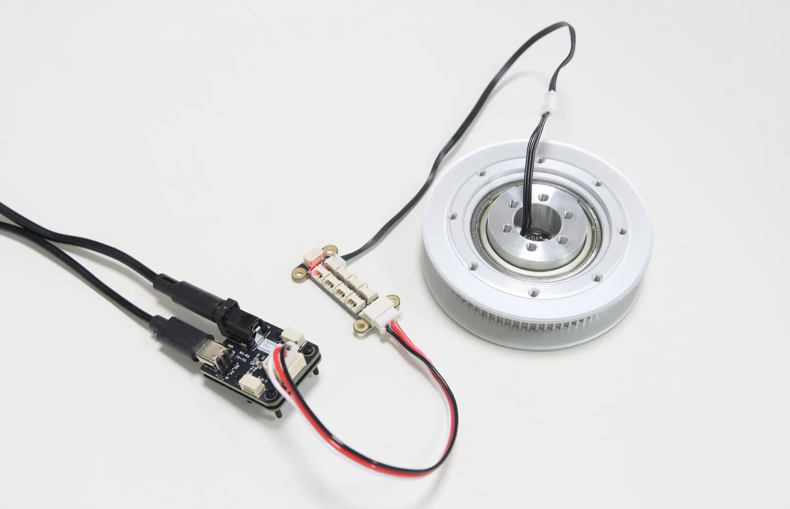
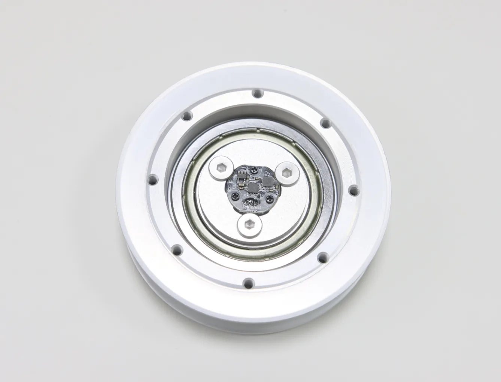
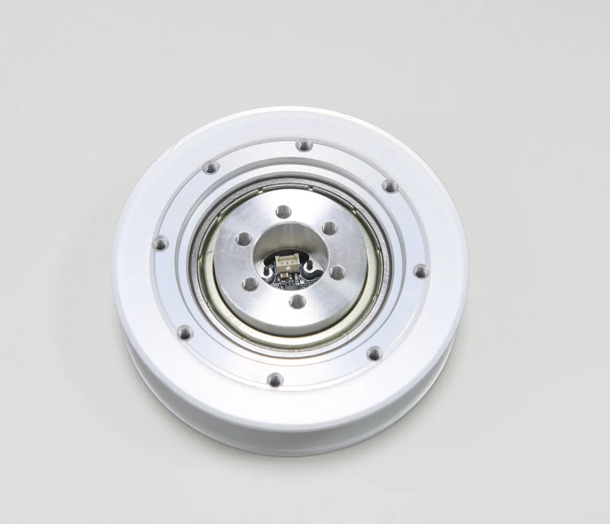
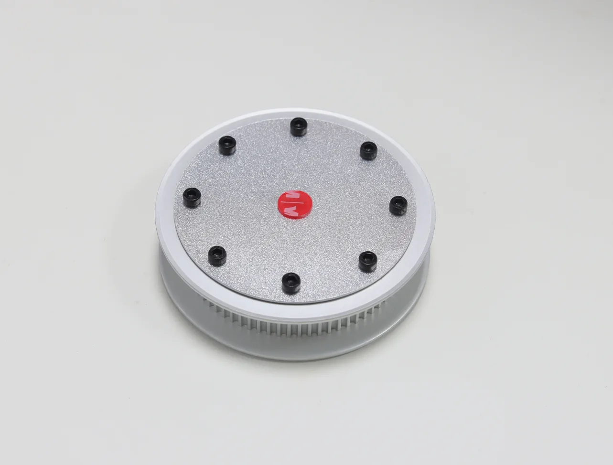
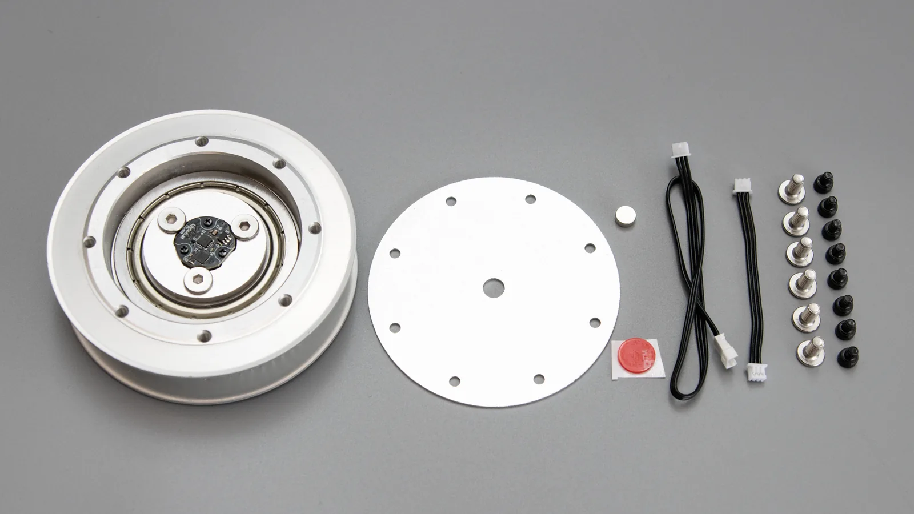

Direct output feedback
The sensing point is on the driven pulley, so readings reflect motion after the belt transmission.
Useful for joint-state monitoringABSOLUTE ENCODER PULLEY
An output-side component for robot joints, timing-belt reductions, and steering mechanisms. It combines an HTD 3M 72T pulley, bearings, and a TTL Encoder E02, allowing the controller to read the pulley’s absolute angle and speed directly.

PRODUCT BENEFITS
SP3M72-E02 is intended for mechanisms that need both timing-belt transmission and output-side angle feedback. Instead of estimating the output from the motor side of a reduction stage, the encoder reads pulley motion directly. This gives the controller the actual output angle and speed in a compact, integration-ready assembly.
The sensing point is on the driven pulley, so readings reflect motion after the belt transmission.
Useful for joint-state monitoringValues from 0 to 4095 represent one full 360° turn, with calibration retained after power-off.
Position is available at startupThe HTD pulley, F6906 flange bearings, fixed mount, and encoder are assembled as one component.
Less custom hardware to designThe HC-1.25-3P interface connects the encoder to a shared TTL bus alongside other supported devices.
Suitable for mixed-device busesPRODUCT STRUCTURE
The first two images leave the magnet and cover plate off so the encoder and cable access remain visible. Install both parts before operating the finished assembly.




MECHANICAL & BUS INTEGRATION
The motion image leaves the radial magnet and cover plate off to show how the encoder remains fixed while the pulley rotates. Inner mounting holes attach the center to the stationary frame; eight outer holes attach links or output parts that rotate with the pulley. Connect the encoder through its HC-1.25-3P port to read the pulley’s absolute angle over the TTL bus.
FD SOFTWARE
After mechanical installation and wiring, use FD software to discover the encoder, read its current angle, and confirm direction. Once the readings are stable, move on to the Python, C++, or Arduino examples for application integration.

SPECIFICATIONS

PACKAGE CONTENTS
DOCUMENTATION
SP3M72-E02 uses the TTL Encoder E02 for feedback. Its Wiki covers the interface, communication, FD software, and development examples.